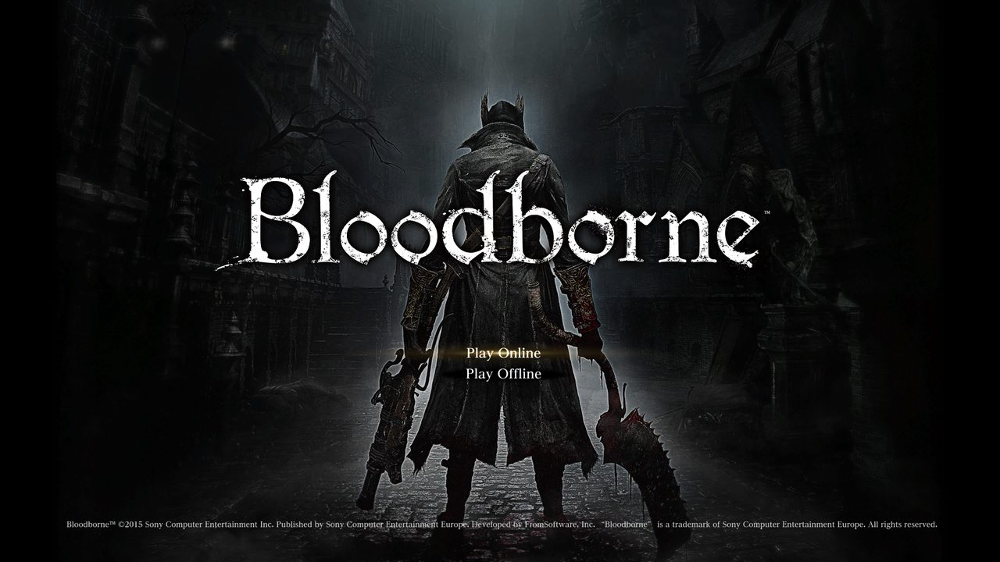
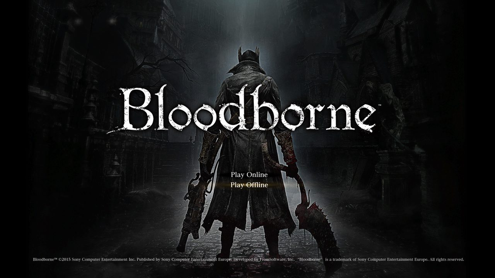
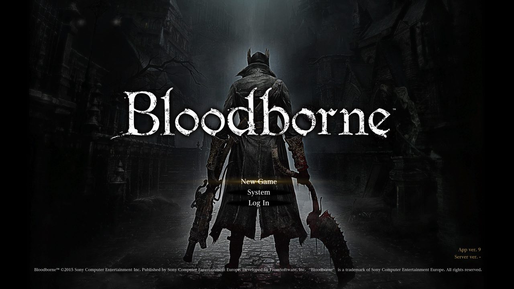
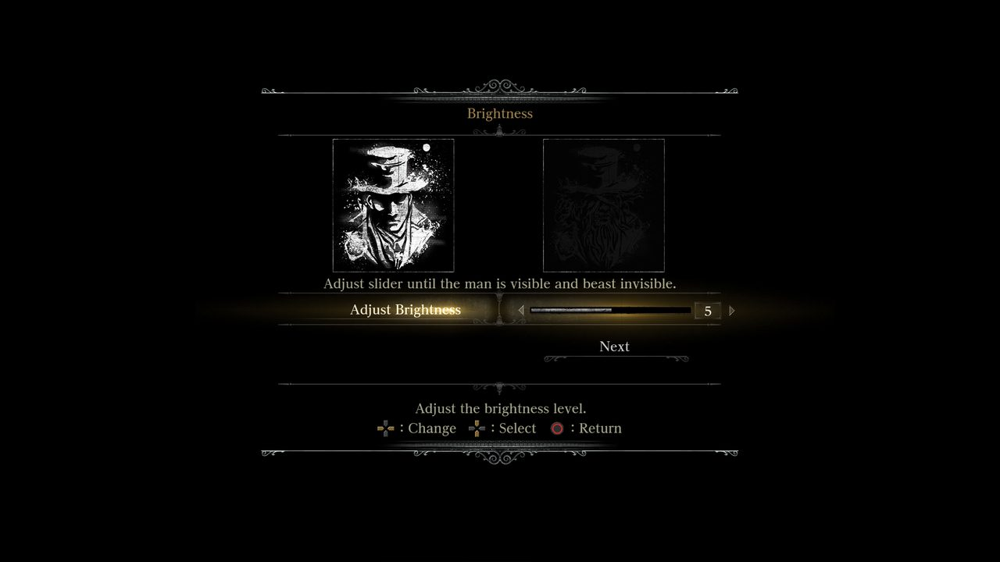
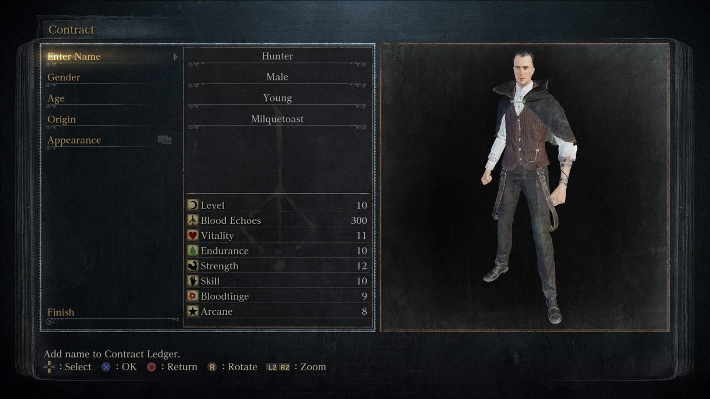
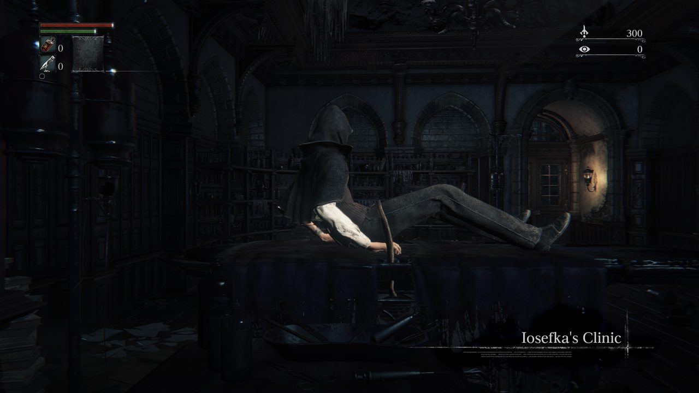

6 October 2026: from an empty repository to the frame loop
The first day: the target prepared, both repositories and their tooling, a runtime for the original executable, the first Ghidra export, and the game's frame loop rewritten as verified C++, from the clock up to the function that runs every frame. By evening, scripted routes carried unattended test runs through the menus and character creation into the game.

The target
Both packages extracted without keys and merged. The update's param.sfo reports the 1.09 app
version. All eight executables (the eboot and seven PRX modules) were fake-signed SELFs with no
encrypted segments, and converting them to ELF only unwrapped them. Hashes are on the
Target page.
Repositories and tooling
progress.pyderives every number fromsymbols/in the code repository.verify.pyruns the original code and a replacement side by side, outside the game, on the same inputs, and compares everything they do (more on that below).- The pre-commit hooks refuse game data, local notes and stale progress numbers.
The converted eboot has no section headers, so there is no .text to measure. The progress
denominator is the set of functions Ghidra finds in executable blocks, tied to the hash of the
committed export.
bbport, the runtime
bbport runs the original executable natively on Linux. It converts the eboot offline into a flat image, links the game's own libc and Fios2 modules into it, and binds every PS4 import to a small runtime. Graphics come from a vendored shadPS4 renderer. The loaded-image hash it pins is the hash of our dump, so it runs exactly our target. Details are on the bbport study page.
It had no general way to replace a function, so our private fork adds one: the loader loads a game library before any game code runs, and the library asks it to put a jump at the start of each function it replaces. Everything this project writes builds into that library.
bbport is GPL-2.0-or-later and contains shadPS4 code, and our code runs in its process, so both repositories are GPL-2.0-or-later.
One address convention
Three conventions are in use, one constant apart: the ELF virtual address (bbport's "guest
offset"), the PS4 virtual address at base 0x400000 (the community patches), and bbport's
host address. Checking real bytes settled it: bbport's hook sites match at the ELF address,
and a community patch only lands on a sensible instruction after subtracting 0x400000.
Everything here uses the PS4 virtual address, with Ghidra's image base at 0x400000.
The first Ghidra export
Ghidra 12.0.3 with the GhidraOrbis loader imported the eboot and finished full auto-analysis in
about 26 minutes. It found 157,757 functions in .text, 42,487,347 bytes, not counting 9,302
thunks. All 671 imports resolved to names through the NID database.
The loader decides where .text ends with a heuristic, and on a small module it put almost all
the code into .rodata, where nothing gets analyzed. So the export needed a check that does not
depend on Ghidra at all: the unwind table. It lists 162,959 functions. 155,000 of them are
functions in the export, and the other 7,959 are all thunks, which the export skips on purpose.
Ghidra also found 2,757 functions that have no unwind entry. The gap is fully accounted for.
That is the size of the job: about 158 thousand functions and 42 MB of code.
The first function: a millisecond clock
0x0111a7f0 turned out to be a monotonic millisecond clock: it asks the system for
CLOCK_MONOTONIC, keeps the seconds of its first call in a shared state object, and returns
the milliseconds since then. The C++ replacement does the same, down to the 32-bit arithmetic
that wraps.
To check the checker, deliberately broken versions of each replacement are run through
verify.py; each must fail. Then the game runs with the hook installed, the replacement
records its real inputs as it goes, and those recordings are compared too: over 30,000 calls in
90 seconds here, and the game reached the title menu exactly as it does without the hook.
Two bugs were caught before anything was marked verified: the recording code dropped half of each clock value, and the tester counted cases from two runs as one when they shared names.
With the monitors off, the desktop throttles a game window to one frame a second. A virtual display (Xvfb) fixes that for test runs, at about 15 frames a second on the title screen.
Finding the frame limiter
The plan was to walk outward from the millisecond clock to the frame limiter. But the clock and its two neighbours have 52 callers, all in one stretch of the executable and none touched by any frame-rate patch: a separate subsystem, not the frame loop.
The frame-rate patches by Kyo (and Lance McDonald for the uncapped one) were written by people
who already found the limiter. Mapping every patched address to its function, then keeping the
functions that both read the clock and sleep, left one that every frame-rate patch edits:
0x02434770, now frame_timing_pace_frame. The
frame limiter article explains how it works.
The limiter, replaced, and the first option
The replacement follows the original instruction by instruction, down to how it converts between integers and floating point and how each comparison treats NaN. Twenty-six hand-written cases cover every mode; four deliberately wrong versions all fail, after two of them first got through and showed the cases had blind spots. In-game recordings, with the community patches off so the original is the real one, all match.
The spinning wait broke the first recording: frames with more than 20,000 clock reads were dropped, which removed exactly the frames that spin. Runs of clock reads are now stored as one series.
BB_TARGET_FPS set to 30, 60 or uncapped changes the limiter in code, the way the
community patches change it with byte edits. Unset, nothing changes. It covers only the limiter:
the patches also fix many places where the game assumes 30 frames a second, and those still need
the patch until they are replaced too. BB_LIMITER_WAIT=sleep makes the limiter sleep instead
of spinning while it waits. Both wait for a measurement on a real screen.
The frame step and the flipper
frame_timing_frame_step is the function the main loop calls once per frame. It asks the
window object whether the game is still running, creates the frame-pacing object on the first
frame, runs the limiter, runs the game's task update, and asks two more objects whether the
player has asked to quit. Four of those questions are virtual calls, so it was the first
function whose inputs are objects: the recordings now describe each object as a small stand-in
whose table slot points at the real function the game called. It matched on every recorded
frame.
frame_timing_flipper_init builds the frame-pacing object. It reads the config value
Game.FlipMode twice through the game's own string class; the shipped config leaves it unset,
which is why the game runs the 30 FPS mode. Verified on the recorded call and nine edge cases.
The microsecond time helper the frame-rate patches edit is replaced too, but the game never calls it before the title menu, so it waits for a run that gets further.
Getting into the game
Every run so far stopped at the title, so functions used only in gameplay had nothing to
record. run_game.sh now plays a route: a list of timed button presses fed to bbport's pad
input, and BB_RECORD saves a clip of the run (there is one in the gallery).
The first route picks Play Offline and New Game and reaches the brightness screen.



Fixed times broke as soon as a dialog took longer, so routes now wait for text on the screen, read by OCR, and can press a button while they wait. Keyboard input types the character's name. The second route got through the controls setup, the opening cutscene, character creation and the contract, which saves the game; a shorter route loads that save, skips the transfusion cutscene and wakes the hunter in Iosefka's Clinic about two minutes after start, with every replaced function in place.


One thing broke on the way: with every replaced function recording its inputs, the game crashed in the opening cutscene. Switching hooks off one by one showed the replacements were not at fault; the recordings were. The limiter's recordings run to megabytes per frame, and with the frame step recording too, frames got slow enough to trip a problem in the runtime. Runs now record only the functions they are collecting for.
The frame-rate option, corrected
A function nothing calls turned out to be a code cave: the time helper the frame-rate patches edit is never called in the stock game, and the patches overwrite it with their own code. That led to a closer look at what the patches do to the functions we did replace, by disassembling each with and without the patch.
They do more than the limiter: they also make the frame step hand the game the measured frame
time instead of a fixed 1/30 s. Our hooked frame step had switched that off, so the first version
of BB_TARGET_FPS=60 would have run the game logic twice as fast. The test harness can now apply
a patch to the original code, so each part of the option is checked against the patch itself:
all edge cases, every deliberately wrong version caught, and frames recorded at 60 FPS in the
game match. A real-screen measurement waits for the display plug.
Counting calls, and three more functions
Of the 59 functions the frame-rate patches touch outside frame timing, 12 turned out to be dead code and 47 live. To find which of the live ones the game actually runs, the runtime can now count calls to original functions without replacing them: a short jump at each entry to a counter that then runs the original. One gameplay run in Iosefka's Clinic showed 13 of them running, several every frame.
Nine of the others are small state methods that advance an owner by a fixed 1/30 s step; they are built next to the game's Chalice Dungeon singleton and do not run in the clinic. They are replaced and checked against the 60 FPS patch, and wait for a save that reaches the Chalice Dungeons. A per-frame task that hands the frame time to its parts is replaced and verified, including what the uncapped patch does to it through a code cave. And the engine's condition variable wait is the first function of a new system, the engine's kernel layer: the patches put a return over its timed wait that would crash if it ran, and every wait the game made was untimed.
One trap on the way: Ghidra treats the engine's fatal error as a call that never returns, so it hides the instructions right after it. The game's code does continue there, and a replacement written from the listing alone got one path wrong until the bytes were read directly.
Workflow
The work no longer waits on the maintainer between steps: a target queue, a standing procedure, a smoke test of the whole pipeline at the start of each session, a lock that keeps two projects off the GPU at the same time, and one game run records inputs for every replaced function at once. Checking the limiter's recordings used to keep a core busy for four minutes; with a native answer for the clock reads, the executable loaded once and low priority, it takes under one.
Replacements may start from a draft of the decompiler's output, kept on the maintainer's machine and never committed. What is committed is the renamed, readable, verified version.
This wiki
It took on the look and features of the ChronoRET wiki, a new icon, a gallery of the test runs, and this devlog now has one post per day.
Next
- The live functions the 60 FPS patches edit, starting with the frame-time descriptor family.
- The other places the frame-rate patches edit.